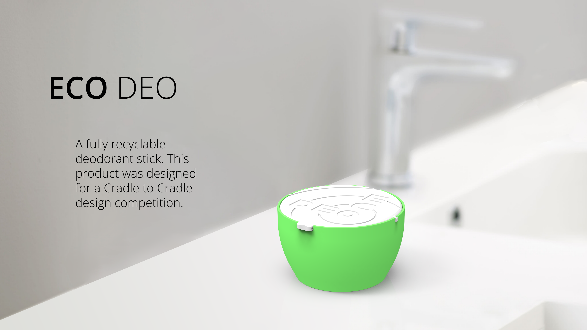

Eco Deo
Solo Work
Industrial Design, Green Design, Design Competition
A fully recyclable deodorant stick. This product was diesigned for a Cradle to Cradle design competition.

Solo Work
Industrial Design, Green Design, Design Competition
A fully recyclable deodorant stick. This product was diesigned for a Cradle to Cradle design competition.